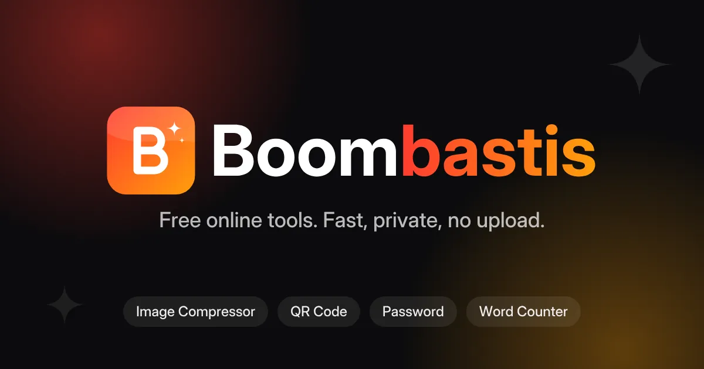
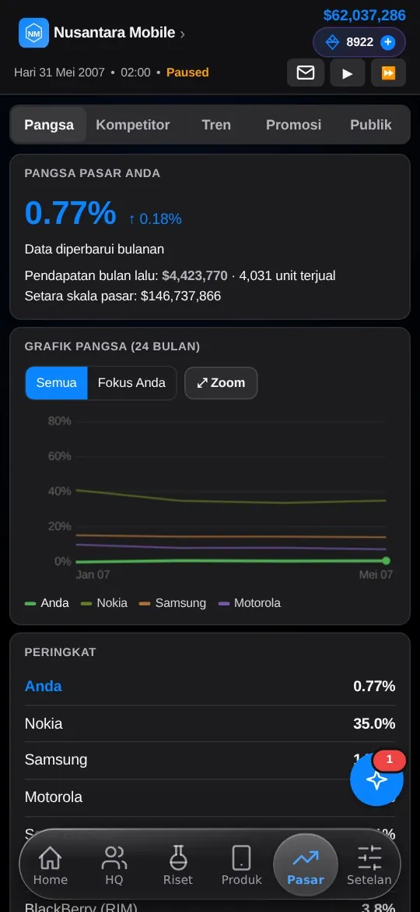

Membangun produk web yang benar-benar dipakai.
Saya Kalfin Agus Setiawan. Saya merancang dan merilis media sosial, kumpulan alat browser, dan game simulasi bisnis, semuanya berjalan langsung di browser dan dibuat dari nol.
Karya terpilih · klik untuk studi kasus

Jurkon (Jurnal Koneksi)
Sosmed buatan orang Indonesia: menulis hanya 250 karakter, feed ada ujungnya, dan bisa menitipkan catatan untuk dirimu setahun lagi.

Boombastis
Alat browser untuk gambar, teks, kata sandi, dan jaringan. Sebagian besar berjalan di perangkat, jadi berkas dan kata sandi tidak pernah diunggah.

Smartphone Empire: Game
Pimpin perusahaan ponsel dari 1 Januari 2000. Lawan Nokia, Apple, Samsung, dan puluhan rival sampai skenario 2027–2030.

Smartphone Empire: Berita
Kabar, spesifikasi, rumor, dan jadwal rilis smartphone dalam bahasa Indonesia. Rumor selalu diberi label dan sumber.

Smartphone Empire: Landing Page
Halaman pengantar game dengan tema terang dan gelap, dua bahasa, serta info akun dan saldo Silicon.
Tentang
saya.
Saya Kalfin Agus Setiawan, pendiri Jurkon Studio. Saya membuat produk digital berbahasa Indonesia yang ringan, cepat, dan menghargai penggunanya.
Tiga prinsip yang saya pegang: privasi dulu (alat Boombastis berjalan di perangkat, tanpa unggahan), tanpa kecanduan gulir (feed Jurkon ada ujungnya), dan dibuat dengan rasa cinta pada bidangnya (Smartphone Empire lahir dari kesukaan pada sejarah ponsel).
Mari bekerja sama.
Punya ide produk, butuh situs, atau ingin berdiskusi? Pilih jalur yang paling nyaman. Biasanya saya membalas dalam satu hari.